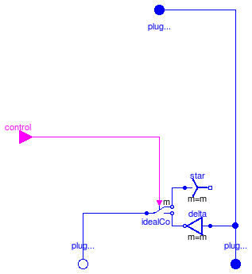
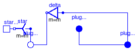

Extends from Modelica.Icons.Library (Icon for library).
| Name | Description |
|---|---|
| VfController | Voltage-Frequency-Controller |
| SwitchYD | Y-D-switch |
| terminal box Y/D-connection | |
| Calculates Impedances from nominal values |
 Modelica.Electrical.Machines.Utilities.VfController
Modelica.Electrical.Machines.Utilities.VfController

| Type | Name | Default | Description |
|---|---|---|---|
| Integer | nout | m | Number of outputs |
| Integer | m | 3 | number of phases |
| Voltage | VNominal | nominal RMS voltage per phase [V] | |
| Frequency | fNominal | nominal frequency [Hz] | |
| Angle | BasePhase | 0 | common phase shift [rad] |
| Type | Name | Description |
|---|---|---|
| input RealInput | u | Connector of Real input signal |
| output RealOutput | y[nout] | Connector of Real output signals |
block VfController "Voltage-Frequency-Controller"
extends Modelica.Blocks.Interfaces.SIMO(final nout=m);
constant Modelica.SIunits.Angle pi=Modelica.Constants.pi;
parameter Integer m=3 "number of phases";
parameter Modelica.SIunits.Voltage VNominal "nominal RMS voltage per phase";
parameter Modelica.SIunits.Frequency fNominal "nominal frequency";
parameter Modelica.SIunits.Angle BasePhase=0 "common phase shift";
output Modelica.SIunits.Angle x(start=0, fixed=true) "integrator state";
output Modelica.SIunits.Voltage amplitude;
equation
//amplitude = sqrt(2)*VNominal*min(abs(u)/fNominal, 1);
amplitude = sqrt(2)*VNominal*(if abs(u)<fNominal then abs(u)/fNominal else 1);
der(x) = 2*pi*u;
y = {amplitude*sin(x + BasePhase - (k - 1)*2/m*pi) for k in 1:m};
end VfController;

| Type | Name | Description |
|---|---|---|
| PositivePlug | plugSupply | |
| PositivePlug | plug_sp | |
| NegativePlug | plug_sn | |
| input BooleanInput | control[m] |
model SwitchYD "Y-D-switch"
constant Integer m=3 "number of phases";
Modelica.Electrical.MultiPhase.Interfaces.PositivePlug plugSupply(final m=m);
Modelica.Electrical.MultiPhase.Interfaces.PositivePlug plug_sp(final m=m);
Modelica.Electrical.MultiPhase.Interfaces.NegativePlug plug_sn(final m=m);
Modelica.Electrical.MultiPhase.Basic.Star star(final m=m);
Modelica.Electrical.MultiPhase.Basic.Delta delta(final m=m);
Modelica.Electrical.MultiPhase.Ideal.IdealCommutingSwitch
idealCommutingSwitch( final m=m);
Modelica.Blocks.Interfaces.BooleanInput control[m];
equation
connect(delta.plug_p, plugSupply);
connect(delta.plug_p, plug_sp);
connect(idealCommutingSwitch.plug_n2, delta.plug_n);
connect(idealCommutingSwitch.plug_n1, star.plug_p);
connect(idealCommutingSwitch.plug_p,plug_sn);
connect(control, idealCommutingSwitch.control);
end SwitchYD;

| Type | Name | Default | Description |
|---|---|---|---|
| String | terminalConnection | choose Y=star/D=delta |
| Type | Name | Description |
|---|---|---|
| PositivePlug | plug_sp | |
| NegativePlug | plug_sn | |
| PositivePlug | plugSupply | |
| NegativePin | starpoint |
model TerminalBox "terminal box Y/D-connection" constant Integer m=3 "number of phases"; parameter String terminalConnection(start="Y") "choose Y=star/D=delta"; Modelica.Electrical.MultiPhase.Interfaces.PositivePlug plug_sp(final m=m); Modelica.Electrical.MultiPhase.Interfaces.NegativePlug plug_sn(final m=m); Modelica.Electrical.MultiPhase.Basic.Star star(final m=m) if (terminalConnection<>"D"); Modelica.Electrical.MultiPhase.Basic.Delta delta(final m=m) if (terminalConnection=="D"); Modelica.Electrical.MultiPhase.Interfaces.PositivePlug plugSupply(final m=m); Modelica.Electrical.Analog.Interfaces.NegativePin starpoint if (terminalConnection<>"D"); equation connect(plug_sn, star.plug_p); connect(plug_sn, delta.plug_n); connect(delta.plug_p,plug_sp); connect(plug_sp, plugSupply); connect(star.pin_n, starpoint); end TerminalBox;
 Modelica.Electrical.Machines.Utilities.TransformerData
Modelica.Electrical.Machines.Utilities.TransformerData
| Type | Name | Default | Description |
|---|---|---|---|
| Frequency | f | nominal frequency [Hz] | |
| Voltage | V1 | primary nominal line-to-line voltage (RMS) [V] | |
| String | C1 | choose primary connection | |
| Voltage | V2 | secondary open circuit line-to-line voltage (RMS) @ primary nominal voltage [V] | |
| String | C2 | choose secondary connection | |
| ApparentPower | SNominal | nominal apparent power [VA] | |
| Real | v_sc | impedance voltage drop pu | |
| Power | P_sc | short-circuit (copper) losses [W] | |
| Result | |||
| Real | n | V1/V2 | primary voltage (line-to-line) / secondary voltage (line-to-line) |
| Resistance | R1 | 0.5*P_sc/(3*I1ph^2) | warm primary resistance per phase [Ohm] |
| Inductance | L1sigma | sqrt(Z1ph^2 - R1^2)/(2*Model... | primary stray inductance per phase [H] |
| Resistance | R2 | 0.5*P_sc/(3*I2ph^2) | warm secondary resistance per phase [Ohm] |
| Inductance | L2sigma | sqrt(Z2ph^2 - R2^2)/(2*Model... | secondary stray inductance per phase [H] |
record TransformerData "Calculates Impedances from nominal values"
extends Modelica.Icons.Record;
parameter Modelica.SIunits.Frequency f(start=50) "nominal frequency";
parameter Modelica.SIunits.Voltage V1(start=100)
"primary nominal line-to-line voltage (RMS)";
parameter String C1(start="Y") "choose primary connection";
parameter Modelica.SIunits.Voltage V2(start=100)
"secondary open circuit line-to-line voltage (RMS) @ primary nominal voltage";
parameter String C2(start="y") "choose secondary connection";
parameter Modelica.SIunits.ApparentPower SNominal(start=30E3)
"nominal apparent power";
parameter Real v_sc(final min=0, final max=1, start=0.05)
"impedance voltage drop pu";
parameter Modelica.SIunits.Power P_sc(start=300)
"short-circuit (copper) losses";
parameter Real n = V1/V2
"primary voltage (line-to-line) / secondary voltage (line-to-line)";
final parameter Modelica.SIunits.Voltage V1ph = V1/(if C1=="D" then 1 else sqrt(3))
"primary phase voltage (RMS)";
final parameter Modelica.SIunits.Current I1ph = SNominal/(3*V1ph)
"primary phase current (RMS)";
final parameter Modelica.SIunits.Voltage V2ph = V2/(if C2=="d" then 1 else sqrt(3))
"secondary phase voltage (RMS)";
final parameter Modelica.SIunits.Current I2ph = SNominal/(3*V2ph)
"secondary phase current (RMS)";
final parameter Modelica.SIunits.Impedance Z1ph = 0.5*v_sc*V1ph/I1ph
"primary impedance per phase";
parameter Modelica.SIunits.Resistance R1= 0.5*P_sc/(3*I1ph^2)
"warm primary resistance per phase";
parameter Modelica.SIunits.Inductance L1sigma= sqrt(Z1ph^2-R1^2)/(2*Modelica.Constants.pi*f)
"primary stray inductance per phase";
final parameter Modelica.SIunits.Impedance Z2ph = 0.5*v_sc*V2ph/I2ph
"secondary impedance per phase";
parameter Modelica.SIunits.Resistance R2= 0.5*P_sc/(3*I2ph^2)
"warm secondary resistance per phase";
parameter Modelica.SIunits.Inductance L2sigma= sqrt(Z2ph^2-R2^2)/(2*Modelica.Constants.pi*f)
"secondary stray inductance per phase";
end TransformerData;